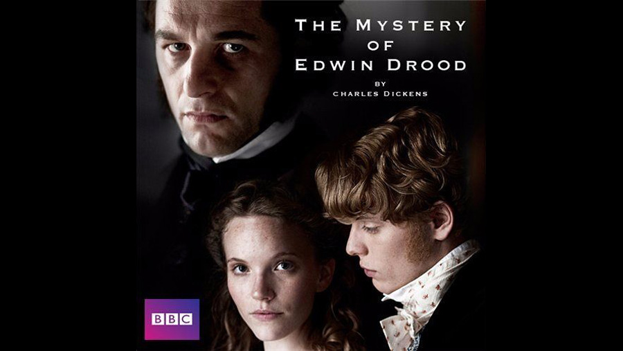

2012

CAST
John Jasper
-
Matthew Rhys
Reverend Septimus Crisparkle
-
Rory Kinnear
Hiram Grewgious
-
Alun Armstrong
Mrs Crisparkle
-
Julia McKenzie
Durdles
-
Ron Cook
Bazzard
-
David Dawson
Neville Landless
-
Sacha Dhawan
Edwin Drood
-
Freddie Fox
Mayor Thomas Sapsea
-
Ian McNeice
Rosa Bud
-
Tamzin Merchant
Helena Landless
-
Amber Rose Revah
Princess Puffer
-
Ellie Haddington
Miss Twinkleton
-
Janet Dale
Deputy
-
Alfie Davis
Captain Drood
-
Rob Dixon
CREATIVE TEAM
Director
-
Diarmuid Lawrence
Screenplay
-
Gwyneth Hughes
FILMING LOCATIONS
Much of the filming was done in Rochester, Kent. Rochester Cathedral and its grounds feature extensively in the series. In particular, the exterior of Jasper's Gatehouse was filmed at the Cathedral Gate in Minor Cannon Row and Jasper's Gatehouse interior was filmed at Eastgate House in Rochester High Street.
The scenes in the marshes were also shot in Kent, at Riverside Country Park in Gillingham.